# [Javascript] Arrow function 與一般匿名 function 對 this 的行為比較
# What is " this” ？
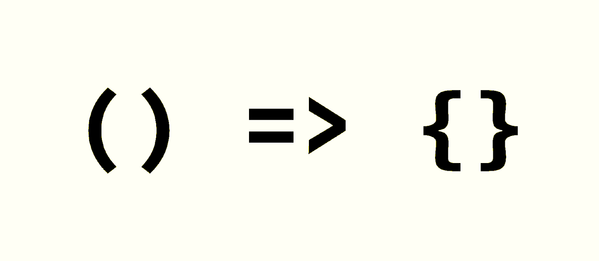
Javascript 在 ES6 之後迎來了一個新的 function 表示方法 — Arrow function。
其表示方式比起一般的 function 表示方式更為簡潔。我們可以使用以下撰寫形式表示以往的 function 行為。
(arg1, arg2, ...) => { /* code here */ }
當 Arrow function 的 argument 只有一個時我們可以省略 () ，當內容指有一項，並且要作為回傳時，我們甚至可以省略 {} 。綜合以上所述，我們在簡化為如下的表示。
arg1 => somethingCodeNeedReturn();
在許多的網站中，不時有看到一些介紹 Arrow function 的文章講解就類似上述所言： 我們可以將一般 function 改寫成 Arrow function 、 Arrow function 是一般 function 的一種簡化表示方式 。
# 然而，真如此單純嗎？
如果這麼單純，我也不用寫這篇文章了。
其實，查詢一下 MDN 上關於 Arrow function 的描述便可以知道了，這兩者其實存在著很多的差異，之所以沒有感覺，可能純粹只是 運．氣．好 。
還沒有踩到坑啊！

](1*qdqCiSptePhqISVU0BxM4w.png){kind=link}
從這段話可以理解 Arrow function 本身沒有 this 、 super 、 arguments … 等 一般 function 擁有的屬性。而今天要探討的 this 不同於 一般 function this 值取決於被呼叫的函式來決定 ； Arrow function 則是 在定義時便綁定到對象的物件上 ( 我們可以理解為 Arrow function 的 this 跟隨其物件的 this )。
我們來看一些例子可能會更清楚
在 Global 的行為
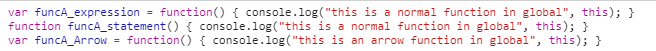
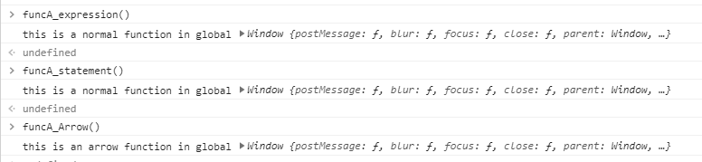
在 Global 中基本上並無差異，原因是不論是一般 function 還是 Arrow function 都該綁定到 Window，這很好理解。
在 Object 的行為
接下來從 Object 開始便有所差異了。
var obj = { | |
methodA_normal: function() { | |
// Object | |
console.log("[ normal function ]", this.constructor.name); | |
setTimeout(function() { | |
// Window | |
console.log("[ normal function <in timeout> normal function ]", this.constructor.name) | |
}, 1); | |
}, | |
methodA_arrow: () => { | |
// Window | |
console.log("[ arrow function ]", this.constructor.name); | |
setTimeout(() => { | |
// Window | |
console.log("[ arrow function <in timeout> arrow function ]", this.constructor.name) | |
}, 1); | |
}, | |
methodA_normal_with_arrow_timeout: function() { | |
// Object | |
console.log("[ normal function ]", this.constructor.name); | |
setTimeout(() => { | |
// Object | |
console.log("[ arrow function <in timeout> normal function ]", this.constructor.name) | |
}, 1); | |
}, | |
methodA_arrow_with_normal_timeout: () => { | |
// Window | |
console.log("[ arrow function ]", this.constructor.name); | |
setTimeout(function() { | |
// Window | |
console.log("[ normal function <in timeout> arrow function ]", this.constructor.name) | |
}, 1); | |
}, | |
} |
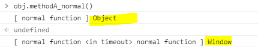
這是執行 methodA_normal 的結果
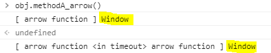
這是執行 methodA_arrow 的結果
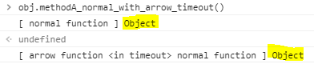
這是執行 methodA_normal_with_arrow_timeout 的結果
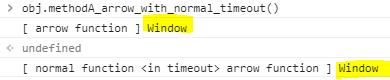
這是執行 methodA_arrow_with_normal_timeout 的結果
從上面的例子我們可以理出一些端倪，Arrow function 中的 this 在定義時，會向外尋找掛載組件的 this 直到找到 global 為止。而一般 function 中的 this 則在使用時，視使用對象而獲得不同的 this
因此，在 methodA_normal 的 setTimeout 中的 function 才會得到 window 而 methodA_normal_with_arrow_timeout 中的 Arrow function 則是獲得 Object 。
Class 生成的物件行為
class A { | |
constructor() { | |
this.methodA_arrow = () => { | |
// A | |
console.log("[ arrow function ]", this.constructor.name); | |
setTimeout(() => { | |
// A | |
console.log("[ arrow function <in timeout> arrow function ]", this.constructor.name) | |
}, 1); | |
}; | |
this.methodA_arrow_with_normal_timeout = () => { | |
// A | |
console.log("[ arrow function ]", this.constructor.name); | |
setTimeout(function() { | |
// Window | |
console.log("[ normal function <in timeout> arrow function ]", this.constructor.name) | |
}, 1); | |
}; | |
} | |
methodA_normal() { | |
// A | |
console.log("[ normal function ]", this.constructor.name); | |
setTimeout(function() { | |
// Window | |
console.log("[ normal function <in timeout> normal function ]", this.constructor.name) | |
}, 1); | |
} | |
methodA_normal_with_arrow_timeout() { | |
// A | |
console.log("[ normal function ]", this.constructor.name); | |
setTimeout(() => { | |
// A | |
console.log("[ arrow function <in timeout> normal function ]", this.constructor.name) | |
}, 1); | |
} | |
} |
我們利用上方的 Class A new 一個 a 物件來做為測試。
var a = new A();
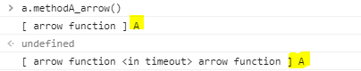
這是執行 methodA_arrow 的結果
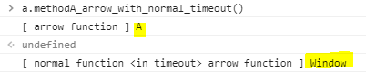
這是執行 methodA_arrow_with_normal_timeout 的結果
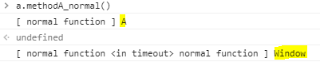
這是執行 methodA_normal 的結果
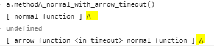
這是執行 methodA_normal_with_arrow_timeout 的結果
測試至此，依照上方的運作原理，其結果也就不言而喻了。
# 總結
之所以會有契機要記錄這篇文章，所有的起因皆為某天與同事們聊到 Nuxt 具有記憶體洩漏 (Memory leak) 的問題。
在查詢相關文獻時，發現了這篇文章找出問題的根源並且修正。
NUXT 内存泄漏引发问题
其中作者發現的問題為 Nuxt 在 Request 的 Closure 中，由於 從頭到尾使用 Arrow function ， 然而 Arrow function 並沒有被綁定在任何物件上 (也就是說 Arrow function 最終綁定在 window 上) ，導致 NodeJs 無法正確地清理無用的資源，最終造成 Nuxt Memory Leak。
而作者的解決方式也很單純：將 arrow function 改為一般 function 寫法，便搞定了。
這不禁讓我反思
如果是我，是否找得出這個 Bug？
若是 沒有清楚地明瞭 Arrow function 與一般 function 的差異，我們可能真的就把 Arrow function 當成一般 function 來理解，然後就忽視了這個地方，最終當然什麼 Bug 也沒解掉。
因此，趁著這次機會，將 Arrow function 與一般 function 的比較記錄下來，以便未來需要時可以快速複習。